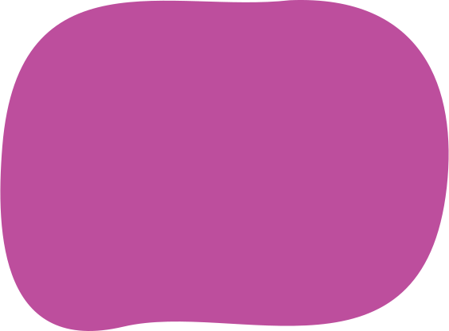
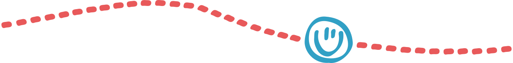
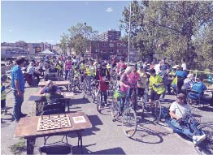
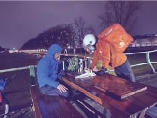
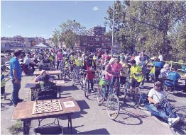
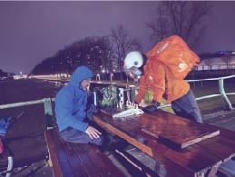
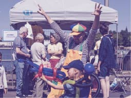
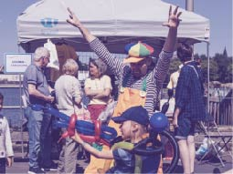
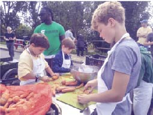
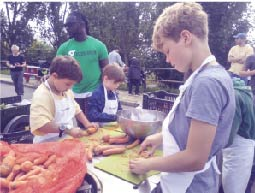

Marchantbrug:
Ceci n’est pas une route. It’s a great place to be!


Surlepont is een groep inwoners van Anderlecht die ijvert voor het behoud van de Pierre Marchantbrug als uitkijkplek, rustpunt, groene as en stedelijke sociale ruimte.
Binnenkort valt er een beslissing over de toekomst van deze brug. Surlepont wil alle inwoners en passanten een stem geven die deze plek naar waarde schatten en gewonnen zijn voor duurzame mobiliteit.


Wij vinden deze plek uniek want:
Er is een geweldig uitzicht dat je uitnodigt om er te verblijven en ervan te genieten
Het is een openbare ruimte die goed functioneert voor ontmoeting en activiteiten
Het is een groene as die je uitnodigt om actief te bewegen en gezond te leven

 




 



 



Onlangs ontmoetten we Gianna, Ward en hun hondje Dali. Gianna is Italiaanse, Ward een ingeweken Gentenaar. Ze leerden deze plek kennen toen ze aan Saint-Guidon woonden. Tegenwoordig wonen ze in Het Rad, maar toch komen ze nog zeer regelmatig naar de brug, om met hun hondje Dali te spelen, en om van het zonnetje en van het uitzicht op het kanaal en de Brusselse skyline te genieten.

Sur Le Pont brengt de vrienden van de Pierre Marchantbrug virtueel samen! Winston is Zweeds, groeide op in Engeland maar verhuisde onlangs naar Brussel. Hij woont op tien minuten lopen van de brug en je vindt hem hier als de zon schijnt, genietend van het weer en een goed boek.

Sur Le Pont wil de vrienden van de Pierre Marchant Bridge online samenbrengen. Vandaag stellen we u voor aan Baptiste, Julien en Ilyas, drie vrienden die in Kuregem wonen. Ze ontmoeten elkaar vaak op de brug voor een spelletje backgammon.

Ook Jef, Katrien, Arnout en Djaina spreken regelmatig af op onze brug. Hun verhaal loopt gelijk met dat van talloze anderen die we de afgelopen weken ontmoetten: ze ontdekten deze plek vooral tijdens de lockdowns, waarin het gebrek aan kwaliteitsvolle groene ruimte in onze stad zo duidelijk werd. Er is het voorbije jaar veel gesproken over de nood aan perspectief, en zeg nu zelf, perspectief hebben we hier in overvloed. Daarenboven doemt aan de einder een zomer met minder zorgen op, en zowaar een openluchtzwembad…

Dat onze brug de ideale plek is voor een romantisch diner bij zonsondergang, weten ook Wim uit Halle en Lore uit Sint-Gillis. See less — feeling romantic.

Vanavond heeft de brug vzw Stoepkrijt mogen welkom heten. Sinds 5 jaren zorgt een geweldig ploeg rond Ben, Dries, Jonathan, Pieter & Jonas uit Molenbeek en Vorst dat mensen kunnen samen komen om op een grote scherm wedstrijden van de Rode Duivels te volgen. Deze avond hebben de stoepkrijtjes de brug als plek gekozen. De sfeer was fantastisch, ook na de match. Bedankt voor deze mooie momenten! https://instagram.com/vzw_stoepkrijt

Bruno Steinrücke is een van de oprichters en huidige voorzitter van Sémaphore, het enige jeugdcentrum in België op het water. De schuit ligt naast de Marchantbrug, aan de Biestebroeckkade. Hij woont ook in een schuit aan de kanaaloever en is penningmeester van de schippersvereniging. Hij is dus al tientallen jaren aan beide kanten van de brug betrokken.

Maya en Flavien zijn net verhuisd naar de Rue de la Gaité. Hun vrienden, Bilou, Emma, David, Lucie en Hichem, kwamen hen helpen met het verhuizen van wat meubels in hun nieuwe huis. Ze delen een biertje in de zon. Ze konden zich geen betere omgeving wensen!

Ah, deze twee hebben echt ons hart gestolen... Javi (Saint-Gilles) en Marie Cécile (Forest) hadden hun eerste blind date op onze brug. We weten niet of de date een succes was, maar we weten wel zeker dat ze een van de meest romantische plekjes van de stad hebben ontdekt!

Laura verhuisde enkele maanden geleden van Sint-Gillis naar Kuregem. Sindsdien is ook zij een regelmatige bezoeker van de brug, waar ze van het uitzicht of van een goed boek geniet (voor de geïnteresseerden: op dit moment leest ze Knut Hamsun, in het Noors daarenboven)

Ook Casimir, Milo, Edgar en Robel zijn regelmatig op onze brug terug te vinden, waar ze bijkomen van een lange schooldag of een intensieve klimtraining in Petite Île.

Joost, Geertje en Gustav steken de brug meerdere keren per dag over, te voet of met de fiets.
Surlepont wil de vrienden van de Pierre Marchantbrug ook online samenbrengen.

.svg)